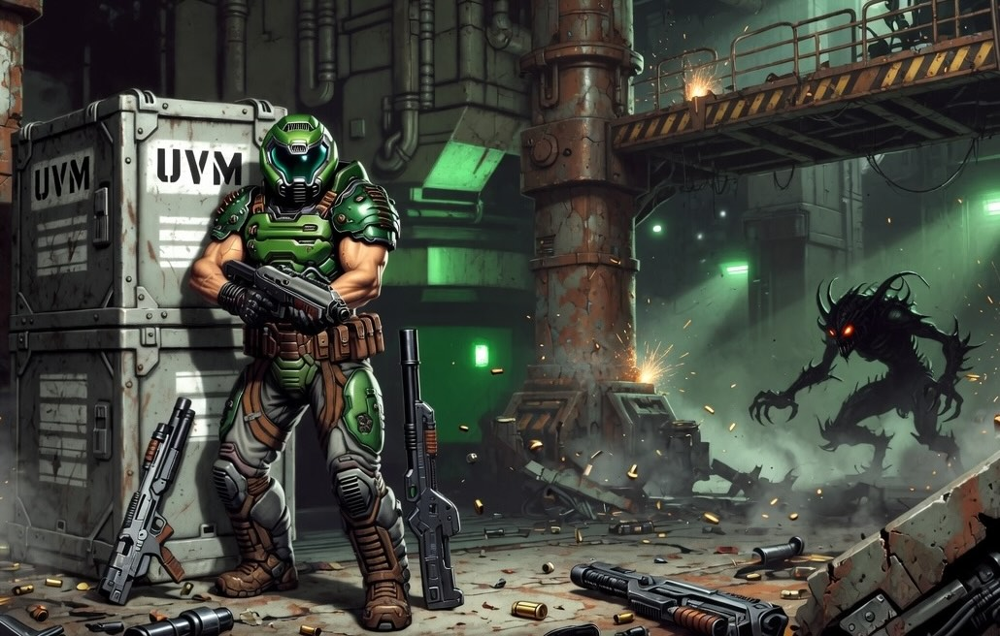

Building a Clang Backend and Porting Doom to my Custom Bytecode VM

All the way back in early 2023, I wrote about UVM, a minimalistic stack-based bytecode virtual machine that I was tinkering on. I got to the point where UVM had floating-point support, the ability to spawn multiple threads, and simple APIs for creating a frame buffer and producing audio output. Unfortunately, I eventually lost motivation to continue working on that project and set it aside.
I do a fair bit of hobby programming, and like many others, I have a tendency to jump from one project to another. Sometimes I feel a bit sad when I think that I left a project in an unfinished state, but it's also nice when the inspiration returns, and I'm motivated to resume working on an old project. I recently picked UVM back up, and I started to wonder what I might be able to do now that agentic AI is a thing.
One of the biggest weaknesses of UVM is that to write software for it, you either have to write it in the VM's custom assembly language, or you have to use ncc, which is a toy compiler for a subset of C that I wrote myself. The name ncc means "not a C compiler", because I took some liberties with the language. I found it fun to write this toy compiler, but its limitations and quirks mean it's not really usable to compile existing software out of the box. A month ago though, I started to wonder, could I just vibe code a clang backend for UVM? If UVM could have clang support, I could compile real software. Maybe I could even get UVM to run Doom.
I did a little bit of research and found that writing a clang backend is quite a bit of work. It also seemed pretty clear that clang is very much designed to target physical hardware. It's designed to compile for a CPU that has a fixed number of registers and sub-registers (e.g. AX, EAX and RAX on x86). There's a major mismatch in trying to get it to generate code for a VM that has either an infinite register file or consumes stack-based bytecode. However, I also knew that it was possible to directly generate textual LLVM IR from clang, and so maybe I could consume that instead.
There's an open source project called PureDOOM, which is a single-header implementation of Doom that's designed to be easy to port. I compiled that with clang and I dumped the LLVM IR. Then I tried to find a Rust crate to parse it. Unfortunately, my two options were either a crate that pulls in all of LLVM as a dependency (and it's a big dependency), or a pure-Rust crate that's already out of date and can't parse the output of clang 21. The downside of textual LLVM IR is that it doesn't guarantee stability over time. It doesn't change a lot, but the format does change.
As an experiment, I tried to ask Claude Opus 4.8 to write a parser for the textual LLVM IR in Rust. It completed the task in about 20 minutes, and the resulting code looked pretty good, so I decided to continue from there. I ended up with a fairly complete clang backend (or should I call it a wrapper?) in a few days. The resulting compiler supports most of the C stdlib, and it has a pthread-compatible API for threads and mutexes. Its main weakness is that it's sensitive to the version of clang you have installed on your system, but I think it should be possible to adjust the parser to make it more flexible, and make it work with a wide range of clang versions.
I'm at a hackathon for the StartupFest conference this week, and I decided to finally do the experiment of trying to compile Doom to run on UVM. With the help of Claude Code, I got it working in just over an hour. I spent the rest of the time doing a few rounds of optimization work. When I originally got Doom to compile, it was only running at ~27 FPS on my MacBook Air M5. That's very much playable, but a bit disappointing considering Doom was originally designed to run on a 486. With a few rounds of optimizations, I was able to bring it up to ~86 FPS. Among other things, I modified PureDOOM to use a lookup table for the palette, and I improved my frame buffer upsampling code to use memcpy to copy rows of pixels, instead of individually writing out the same rows of pixels multiple times.
For the sake of completeness, I also used Fable to generate a MIDI synth so we can hear Doom's badass soundtrack, because the game is not the same without it. I made uvm-doom open source if you feel like trying it. If you run into any problems, feel free to open an issue on the UVM repo, but please provide as much info as possible regarding your setup (e.g. operating system and clang version). In terms of next steps, I'm thinking about refactoring UVM to use a register-based instruction set. Everyone loves stack-based interpreters because they're kind of intuitive in a way, and maybe they're a good teaching tool, but they also leave a fair bit of performance on the table.